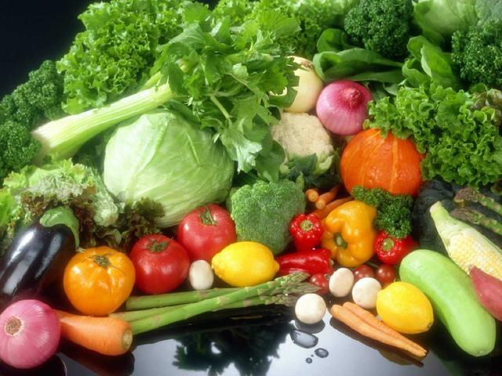
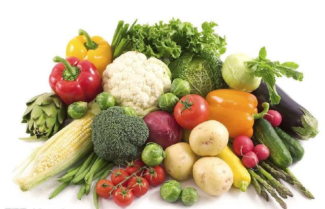

有机蔬菜
有机蔬菜太贵了？你对“有机”了解多少？ “有机蔬菜怎么这么贵？还是去买那些普通的菜吧，反正都一样吃。” 最近在超市买菜的时候总是会听到一些人这样说（表示无奈）。
确实，相对于普通蔬菜来说，有机蔬菜的价格更高一些，可大家真的了解过有机蔬菜和普通蔬菜的区别吗？ 有机蔬菜为什么这么贵？ 有机蔬菜在种植的过程中，需要耗费大量的成本。 1.时间成本。有机蔬菜对环境的要求特别高，种植土地要求三年以上的转换期，让土壤中的有害物质慢慢降解，肥力慢慢养成，最终达到国家有机标准。 2.种植成本。有机蔬菜对肥料的要求特别高，只能使用有机化肥进行种植，有机化肥价格较高，所以种出来的蔬菜价格也会高。 3.人工成本。有机化肥不能够使用除虫剂和除草剂，只能够人工进行管理除草。 4.认证成本。土地、大气、水质等需要进行环境认证，原料、种植、成品也需要进行有机认证。
你对有机了解多少？以君源为例，君源有自己的有机农场，它投入巨资研发创新型营养补充品，帮助提升中国居民的蔬菜日常摄入量，以16种有机蔬菜为原料制粉，把蔬菜变为“可以喝的有机蔬菜”，可以直接冲饮，或搭配酸奶、米糊、面糊等食用。 工艺上，君源有机蔬菜原粉采用的是美国尤索300目超微制粉工艺，大大提升粉质细腻度，改善产品口感提高人体吸收率。 生产上，君源有机农场与知名医药企业合作，在GMP10万级生产车间生产，采用药品级标准封装。严格意义上来说，君源有机蔬菜原粉全程杜绝人工合成化学物质，是一款安全、放心的高端有机食品。
有机蔬菜
俗话说，一分价钱一分货，贵是会有贵的道理的，有机蔬菜在种植过程中所耗费的要比普通蔬菜多得多，大家可以以君源有机蔬菜原粉为参考，为国民健康饮食做出贡献。
遵循自然规律和生态学原理，采取一系列可持续发展的农业技术，协调种植平衡。
制作人：保定学院电商一班张宇航
欢迎观看